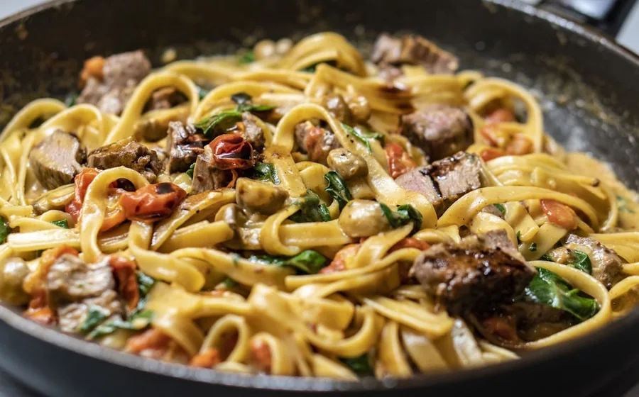
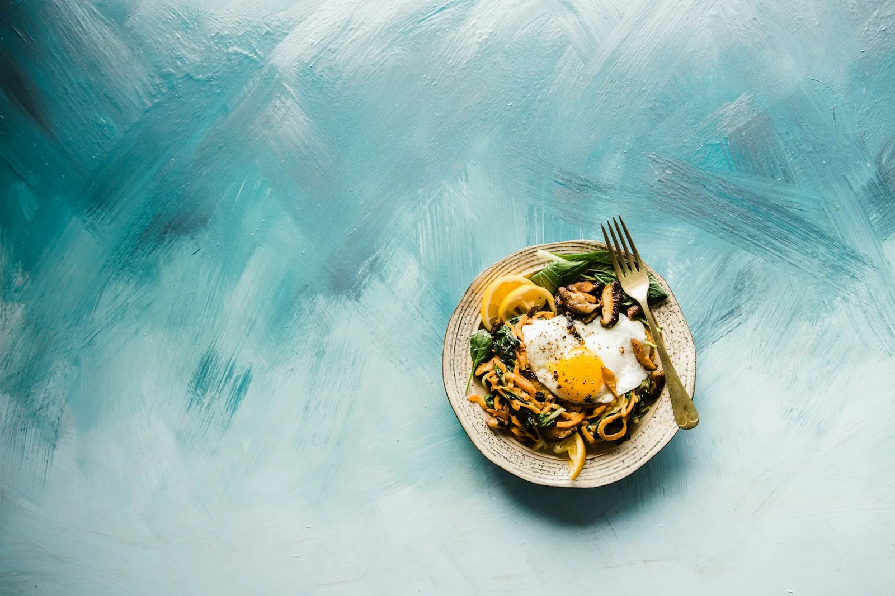
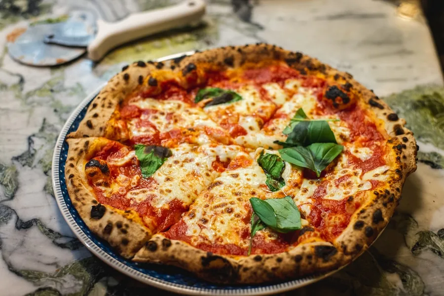
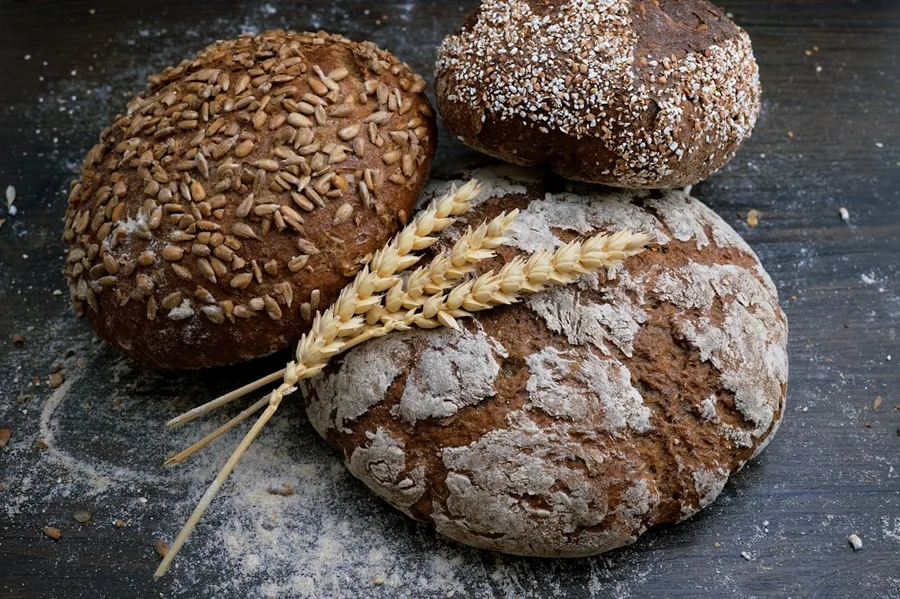
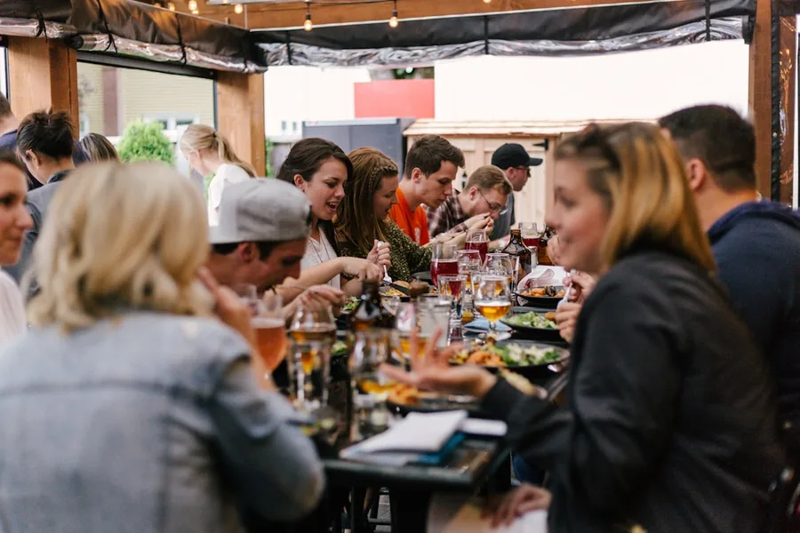
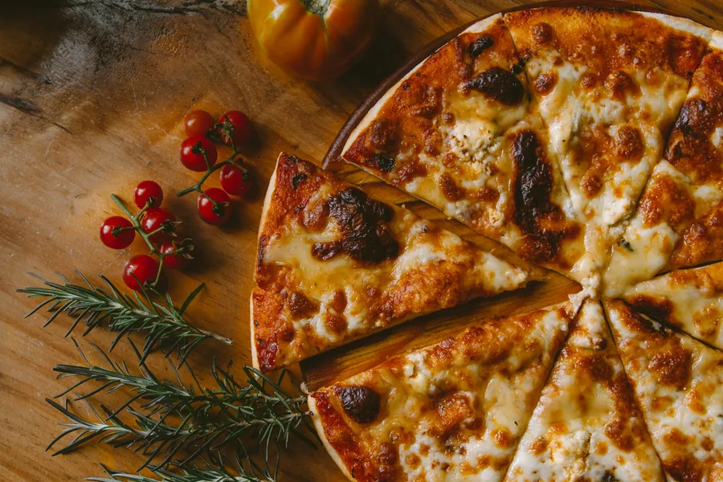
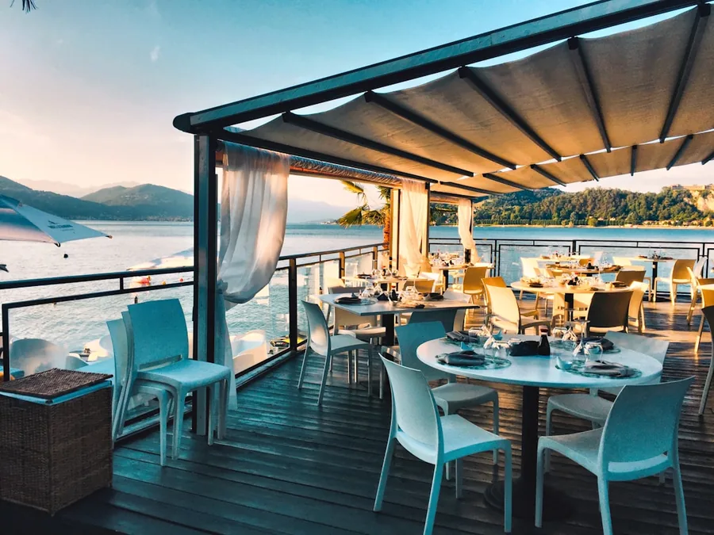
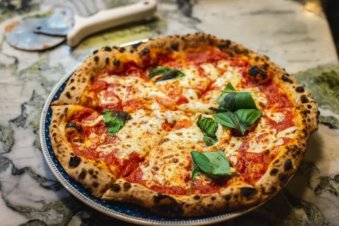
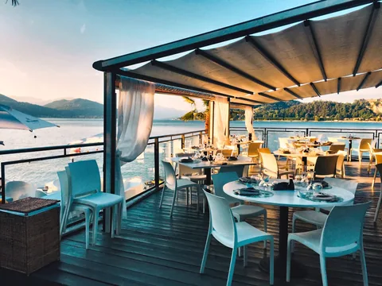
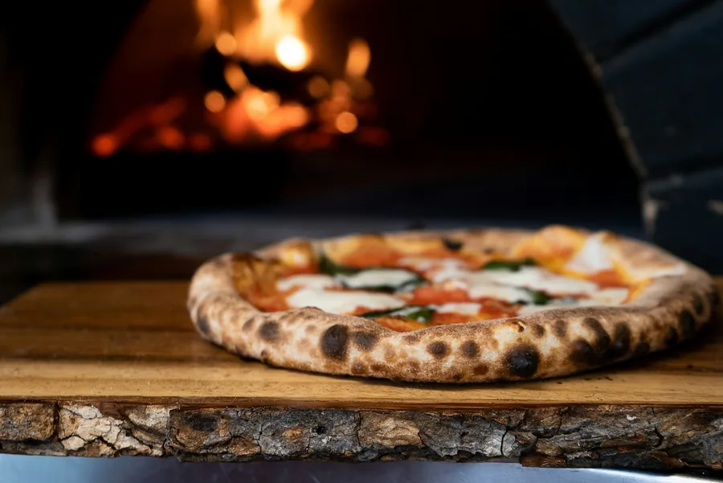

01
Margherita D.O.C.
San Marzano, fior di latte, basil, extra virgin olive oil
£12Independent pizza bar / Est. 2016
Neapolitan pizza, natural wine and the kind of night that gets better after the first bite.

Not just a pizza place
Forno is a little pocket of Naples in the city. Our dough gets time, our tomatoes get sun, and every pizza gets a few seconds of live fire. The rest is up to you.
See how we do it
Food tastes better when you can see where it comes from.
- The Forno team
From the first fold to the last sip, every detail has a reason.

48 hours of rest makes a crust that is light, blistered and worth talking about.
Our oven runs at 450 degrees. The bake is fast, the flavour is deep.

Good tables are shared. Order another bottle, ask for extra chilli, linger.


Real words from real tables, plus the next reason to come back.
"The crust is unreal. We came for a quick pizza and stayed for three hours."
A six-course menu, a guest chef and one long table. Limited seats.


Your table is waiting
